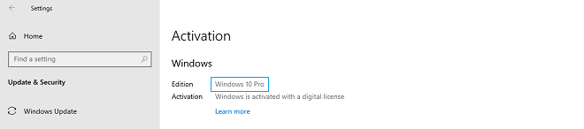
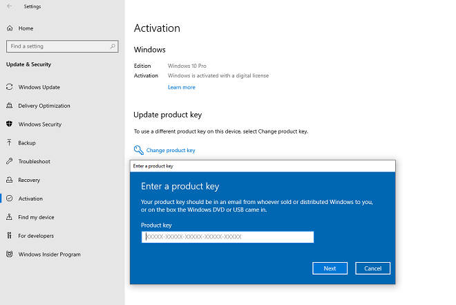

Proverite i uverite se da imate isto
izdanje Windows 10 sa izdanjem licenckog kljuca
koji ste kupili. Ukoliko licenca/kljuc ne odgovara
izdanju vaseg Windows-a, Windows se nece aktivirati.
Da proverite izdanje
vaseg Windows-a pratite sledece korake: Kliknite na
START dugme, zatim na
Settings > Update & Security > Activation. Pod
Edition pisace vam vase izdanje
Pro ili Home.

Aktivacioni
kljuc/kod se unosi
nakon zavrsene instalacije windowsa. Za unos
aktivacionog kljuca/koda kliknite na START dugme,
zatim na
Settings > Update & Security > Activation > Update product key >
Change product key.

Aktivacion kljuc/kod je dozvoljeno koristiti samo na jednom
racunaru.
Windows 10 mozete preuzite
ovde.